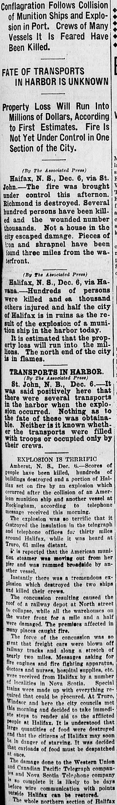
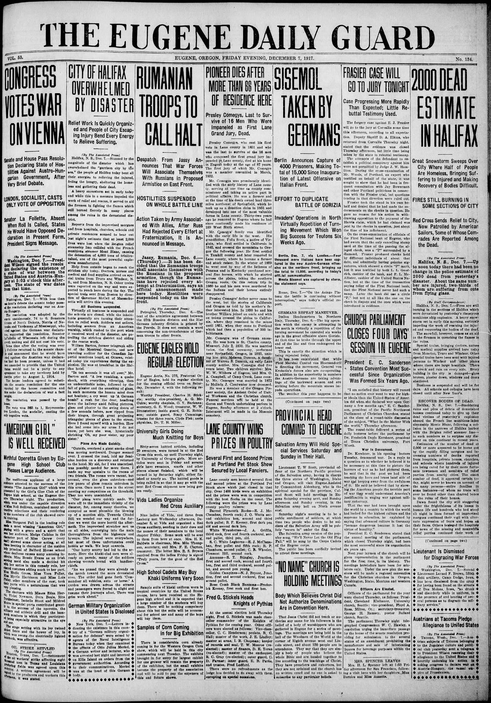
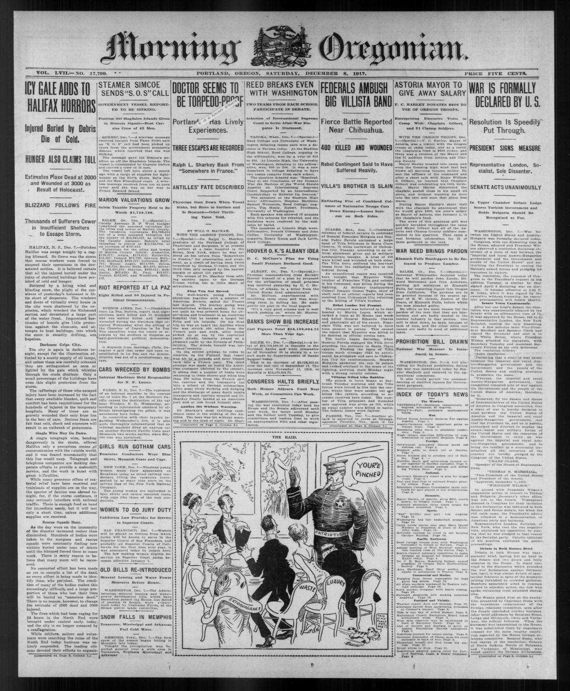

HN HN-407 · December 8, 1917 · Disasters, Accidents & Emergencies > Explosions, Industrial & Workplace Disasters > Explosives depots and munition blasts
Source: Jasper County Democrat, p. 2 — original page; Nova Scotia Archives.
Report: The newspaper estimated 2,000 dead and 3,000 injured after the French munitions ship Mont-Blanc exploded in Halifax Harbor. Its account incorrectly identified the colliding vessel as a Belgian relief ship named Ionia and located and timed parts of the collision inconsistently.
Assessment: The other vessel was the Imo, a Norwegian ship. Nova Scotia Archives maintains a name-based record of 1,782 known victims; broader historical estimates near 2,000 are common, so the newspaper's rounded toll is not necessarily a categorical falsehood. The vessel's identification, however, is demonstrably wrong.
Authentic scans retrieved from Historic Oregon Newspapers (University of Oregon). Article crops are located using the archive's own OCR word coordinates and rendered at native crop resolution; page scans are reduced-size access renditions. No images were generated, mocked, or retouched.



Not yet acquired. Queued for provider-specific acquisition testing (see source-acquisition manifest).
URL (preserved verbatim): https://newspapers.library.in.gov/?a=d&d=JCDC19171208.2.17
Saved research report: Historical_Newspaper_Event_Research_403-427_2026-10-23.md
Evidence note: A newspaper report means a historical publication made a claim; it does not establish that claim as fact. Contemporary reporting is separated from later scholarly context and our own assessment.